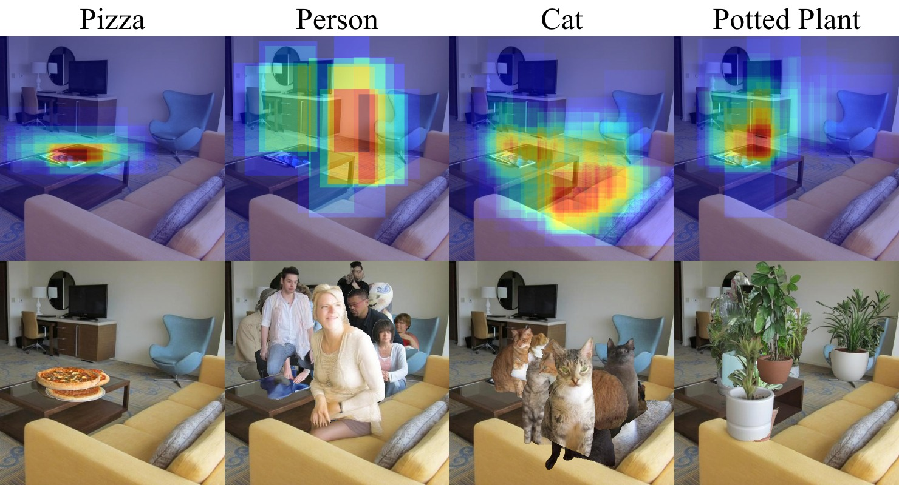

We evaluate via ImgEdit-Judge (Qwen2.5-VL, scale 1–5) across three axes: Prompt Compliance (PC), Visual Naturalness (VN), and Physical & Detail Coherence (PDC).
Method
① Inpainter
Qwen-Image + ControlNet synthesises class-consistent object insertions at each bounding box in a sliding-window grid. ControlNet conditioning enforces scene geometry and refuses physically impossible placements.
② Verifier
Grounded-SAM-2 detects whether the target object was successfully inpainted in the proposed region. Low-confidence detections, wrong categories, and object replacements are discarded.
③ Ranker
ImageReward assigns a human-preference score to each verified insertion. The ranked scores define the final spatial prior distribution over all valid locations.

Example spatial prior creation. Our pipelines makes an exhaustive search via sliding window locations on a kitchen scene for pizza insertions.

Composite Overlay of Inpaintings.. Multiple valid inpaintings are aggre- gated into a single composite scene. Accepted objects are segmented and overlaid on the source background. Insertions are ordered by preference ranking so the highest- ranked object remains unoccluded at the top of the stack.